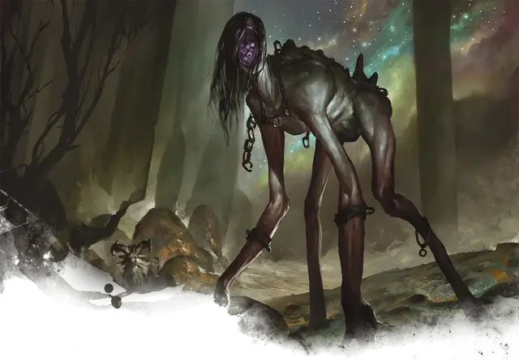

Горемыка
Woe Strider
Большая Аберрация, хаотично-злая

Класс Доспеха 17 (природный доспех)
Хиты 110 (13к10 + 39)
Скорость 40 футов, лазая 40 футов
| мод | спас | ||
|---|---|---|---|
| СИЛ | 18 | +4 | +4 |
| ЛОВ | 15 | +2 | +2 |
| ТЕЛ | 16 | +3 | +3 |
| мод | спас | ||
|---|---|---|---|
| ИНТ | 8 | −1 | −1 |
| МДР | 14 | +2 | +2 |
| ХАР | 14 | +2 | +2 |
Навыки Восприятие +5, Запугивание +5
Иммунитет к состояниям испуг
Чувства тёмное зрение 120 футов, пассивное Восприятие 15
Языки Телепатия 120 фт.
Опасность 7 (2900 опыта)
Бонус мастерства +3
Особенности
Конус антимагии. Открытый рот горемыки создаёт 60-футовый конус зоны антимагии, как заклинание преграда магии [antimagic field]. В начале каждого своего хода горемыка решает, в какую сторону направлен конус, и открыт ли его рот или нет.
Действия
Мультиатака. Горемыка бродяга совершает две атаки Когтями и одну атаку Укусом. Если обе атаки Когтем попадают по одному и тому же существу, то цель становится схваченной (Сл высвобождения 14).
Коготь. Рукопашная атака оружием: +7 к попаданию, досягаемость 10 футов, одна цель. Попадание: 7 (1к6 + 4) рубящего урона плюс 3 (1к6) урона психической энергией.
Укус. . Рукопашная атака оружием: +7 к попаданию, досягаемость 5 футов, одно существо, которое схвачено, недееспособно или опутано. Попадание: 13 (2к8 + 4) колющего урона плюс 16 (3к10) урона психической энергией. Кроме того свойства каждого магического предмета, который носит существо и который не является артефактом, подавляются на 1 минуту.
Описание
Горемыки бродяги формируются из душ тех, кто разорвал нити судьбы. На протяжении веков эти космические богохульники превращаются в сгорбленных, длинноногих кошмаров. Садистские твари - горемыки бродяги, ищут способы вплести себя в гобелен судьбы. Это заставляет их искать ответы в недрах других существ, совершая смертоносную гаруспику в погоне за своей отвергнутой космической целью. Когда им не удается найти ответы, их противоестественные крики заставляют реальность содрогаться, сотрясая как магию, так и здравомыслящие умы.